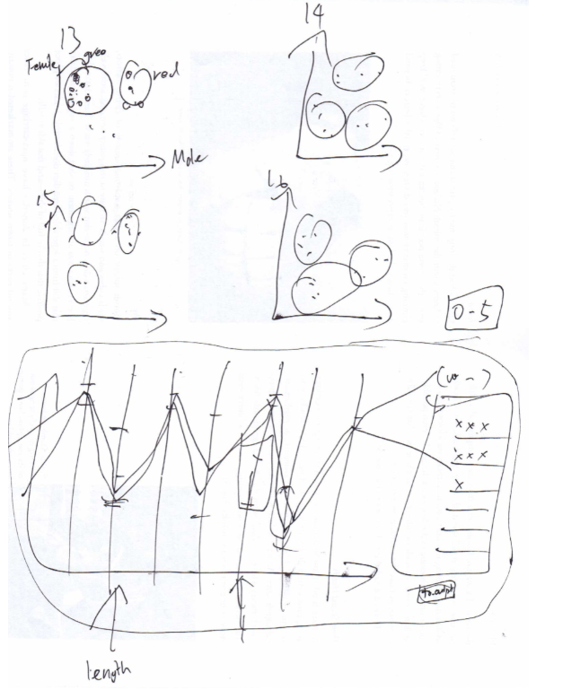
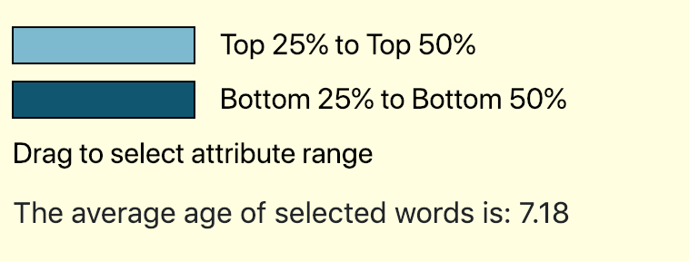

{kind=link}
{kind=link}
{kind=link}

This project aims to visualize the process where children pick up new vocabularies. Furthermore, it aims to give users a rough sketch of properties of those words, and allow users to relate the data to their own interest and have their own discovery about kids's vocabularies. Finally, not only will users take away interesting ideas from this visualization, but they can also download their exploration in a csv, and use it for future research.
Content-wise, we were inspired by the initial text analysis in class and the discussions on how. It made us more curious about the presentation of words to children and how their vocabulary stacked up against the real world in terms of how positive it was, how concrete it was, etc. Beyond that, knowing the importance of children developing a strong vocabulary piqued our interest because it's a life-changing issue, and there is plenty of media stressing its importance, like this one, along with plenty of research and analysis (like the one we read here). The parallel coordinate libraries online are helpful since it provided insight in how to handle drag events in svg canvas. We also used handsomeform which is a non-commercial library allowing us to have spreadsheets presented on web pages. The general blog sites are helpful that we learned how to make our data downloadable based on user selection. Overall, the field of studying vocab development is young but burgeoning, and we were excited to explore it more and learn.
Sources are mostly from The Center for Reading Research in Belgium (who have international studies that are relevant universally to language learning). They’ve more or less done all the research and data acquisition and have plenty in spreadsheets.
None necessary!
We merged our datasets and made a new csv with all the attributes for each word, eliminating words that didn't have complete data. For the later charts, we used a sampled subset of all words to reduce latency issues.
Other Designs:
At the very first, we started off by drawing random charts on paper, the purpose of this is to have a pool of designs to pick from. Some designs look like this: (Very rough and ugly and motivate innovation:
Based on those random thoughts, we generated a few valid page layouts.
During the stage of Milestone #1, we updated our sketch to add more details, and we recognized the functionalities of each parts. This process is crucial, so based on those plans we started to get our hands on a very rough visualization.
We divided our visualization into four parts, and we named them: "Words By Age Chart", "Word Child Chart", "Property Dictionary", and "Word AoA Overview". Note that we updated those names in our later designs, since those names are confusing, and users didn't know what to do with each part or understand their relations. Sketches for each part of our design:
Notice that, at Milestone #1, we decided to have our future design functional based on this framework. It didn't not deviate from our initial sketch. We just picked our best designs and put them into plan and work.
Following our plans we made during initial design. We finished the draft for two of four parts, which are the first and third parts of the graphics. They were functional, and look like this:
The graphics above set up examples about how we can:
We found some potential problems during our talk with other groups about Milestone #1, which are:
For Milestone #2, we set up the full framework for the project. The goal for this stage is to have the graphics functional (but not necessarily artistic) in order to best get feedback on the core of the visualizations. Based on this design we generated ideas for the final visualization. Below, I will explain about each part of our design, and how it evolute from our initial designs.
We added this navigation bar because originally we had our charts all on one page, and since there are too much content, they barely fit into that page. Also, since we wanted to work independently on our respective designs, we wanted to better facilitate conflict-free development.
A potential problem is that when this navigation bar loads initially, there is a lag and shapes showing up on the page. So this needs to be optimized.
Our scatter plot functions pretty well. On the top there is a bar allows us to select timeline of our desire. On the left is the selection pane and on the bottom is the scatter plot.
The problem with this design is that right now it looks monotone and simplistic. To add more variations, more tool tips can be added, and we can also update the page layout to make it look better.
In this chart, we improvide the old design by adding colors to each line, representing the age of acquisition of that word. We also added a clear button, so that all brushes can easily be erased. We also optimized the code by slicing the data, so the page loads faster.
The problem with this design is that it might be too complex for people to understand and the lines look kinda messy. To solve this problem, we need to do a clean up and hopefully find a better design than parallel coordinate for our charts layouts.
This chart is pretty much identical to Milestone #1 since the focus was on developing functionality for our second half of visualizations. Nevertheless, a great improvement is that this chart now has tooltips and it helps guide the users towards understanding our data.
We need to make the graphics look better. Again, this can be pushed over to after the dry run, in which we can get advice from peers.
In this fan chart, users first click on the first letter, then the second, to find the collection of words, complete with a spinning animation. On the top, there is a line keeping track of which level the user is at.
There are many things I can do to improve this chart. First, I should make it clear that clicking on middle of the fan would return to last level. I'm planning to add a button here. Second, this fan looks ugly when too many words fit into too little space. I'll take the words out of the fan and put them elsewhere so the users can easily see it. Third, right now this chart does not connect with other charts very closely. I'm adding a tooltip to it so that it allows users to get meaningful results when doing a search. Fourth, some users may not like to use the pane to search, so I would add a separate search bar for this function.
We took all of our user testing into consideration, and many of our adjustments are clear responses to our user testing feedback and observations. Therefore, we felt it valuable to include our notes:
A:
We added a kid's favicon to add more spice to our page. Now it looks more like a legitimate web page.
We updated page layout so that we follow a strict color theme and all elements on the page thus look more harmonious. We use three colors which are purple, blue, and green of different lightness. A great improvement from the old navigation bar since now the buttons looks clickable, and we also have shorter and clearer names for parts of our graph which indicates their functionality.
Since one of our biggest problems was the oversimplicity of the main display, we've supplemented it more than a little. The new and improved main chart has images of children whose heights match up to the line graph at the approximate age they represent. We don't believe this is pure chart junk since it does provide some contextualization of age ranges besides numbers. Additionally, we supplemented our data further by adding milestone information for whichever age is highlighted. While not directly related to the children's vocab, we believe that it is important to have some kind of context for what the child's life state is like at any given age in order to fully understand how their language is developing. Additionally, we made the dots bigger on both scatterplots since it was proving difficult to get the tooltip, along with adding tooltips to the growth chart. The functionality is otherwise the same as previous iterations since it was clear and caused no problems during user testing.
Our second chart is designed to let users see trends in the attributes of words over different periods of time. They can select dimensions to produce a graph of their choosing, along with an age or age range to filter the plots. Since a point of confusion was what some dimension names meant, there are new and improved tooltips upon hovering over the names. We reorganized the layout and moved the age selection area to the bottom since it was a point of confusion, along with adding a prompt to select a dimension.
If users select one dimension or two of the same dimension, a dynamically scaled bar graph is created.
If users select two unique dimensions, a scatterplot with their selected x and y axis is generated. Both here and in the bar graph case, we realized that eying a trend would be difficult, so we added the statistics to the side showing the average value of each dimension and the change over the selected age range (e.g. concreteness goes down over a point between ages 2 and 12, indicating a trend towards the abstract). We feel like this makes it far easier for users to see a trend if there is one.
This search chart is consisted of a search pane, which allows users to click to find the words they want to see; a search bar which allows users to type in key words and find words with suffix or prefix; a babble graph which shows all the research results; and tool tip for each word. We switched from simply showing the words on the fan chart to a babble graph because a) it looks far more aesthetically pleasing, b) the words are easier to read when right side up, c) it allows a separate typed search functionality, and d) it's far more forgiving when you want to check multiple letter combinations since the results aren't combined with the search in the same graphic.

The search pane now only has two layers: "First Letter" and "First Two Letters". The words will show in the babble chart instead. This is because for some initials, there are too many words and they don't exactly fit into a pane. Moreover, some users may prefer to type instead of click, or they want to find words by suffix/prefix, so they can use the search bar instead. The center of pane is now shown as a button and thus clickable.
I'm using the system default tooltip. The advantage is that it fits better with generic user interface and look natural (not an annoying window following your mouse around). When the mouse hoover over babbles, there would be a loading sign indicating the user needs to wait 3 seconds for the default tooltip to show up.
In this download chart, the user can see a box graph of attribute distribution over the whole data set. If they want to see more detailed distribution for properties, they can shift to "Attribute" tab to see more. The box chart allows the user to use brush tool and narrow down the selection. Since box chart shows where the data mainly at, it provides a good assist for the user to know where most data is at.
There is a handle for the brush, and the handle is totally clickable. It's an effective add-on to the visualization since it tells users to drag the thing. (Yes, wherever there is a button/handle, you want to touch it; even babies understand this rule).
There is a line showing the average age of data selected, which changes as users adjust the brushes. This can attract their attention, and they may find some useful information or key takeaway from the data set.
There is a download button showing how many entries are in the data set. By clicking on it, the user can download the data they selected. This feature is crucial. The user may have some intent for the data, effectively a vocabulary set, and want to use it for whatever reasons. By allowing them to have the data, the key takeaway to users will be more than memory but useful spreadsheet to do research in the future.
Generally, we had a broad view about our data set through our visualization. The most interesting factors include not exclusively to factors as below:
Our visualization functions pretty well. However, if the linguistic scientists come up with much larger and comprehensive databases of kids' word learning, we will need to change the visualization tools to represent that data, and find ways to handle the delays.